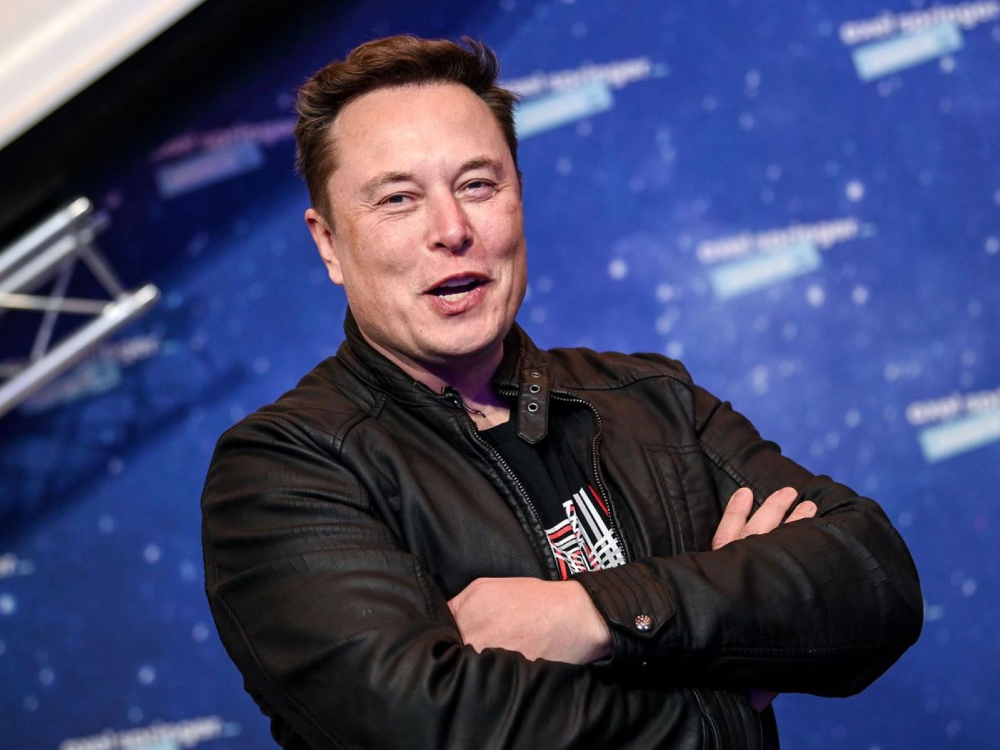

<!DOCTYPE html>
<html></html>
<head>
    <title>Elon Musk</title>
    <link rel="stylesheet" href="style.css">   
</head>

<body>
    <h1><b>Elon Musk</b></h1>
    
    <div>
        <h4>
            <p>Elon Musk, (born June 28, 1971, Pretoria, South Africa), South African-born American entrepreneur who cofounded the electronic-payment firm PayPal and formed SpaceX, maker of launch vehicles and spacecraft. He was also one of the first significant investors in, as well as chief executive officer of, the electric car manufacturer Tesla. He was the richest person in the world with an estimated net worth of $259 billion as of April 24, 2022.1 Musk achieved that distinction in 2021, surpassing Amazon.com Inc. (AMZN) founder Jeff Bezos.
            <br>
            Musk was born to a South African father and a Canadian mother. He displayed an early talent for computers and entrepreneurship. At age 12 he created a video game and sold it to a computer magazine. In 1988, after obtaining a Canadian passport, Musk left South Africa because he was unwilling to support apartheid through compulsory military service and because he sought the greater economic opportunities available in the United States.
            <br>
            Technology became an escape for Musk. At 10, he became acquainted with programming using a Commodore VIC-20, an early and relatively inexpensive home computer. Before long, Musk had become proficient enough to create Blastar—a video game in the style of Space Invaders. He sold the BASIC code for the game to a magazine called PC and Office Technology for $500.
            <br>
            Elon Musk is working to revolutionize transportation both on Earth, through electric car maker Tesla -- and in space, via rocket producer SpaceX.

            </p>
        </h4>
    </div>
    <div class=timeline>
        <h1>Elon Musk’s 8 Greatest Accomplishments </h1>
        <h4>
            <p>
                <br>☞ 1. X.com...Most people haven’t heard of X.com, one of the first online banks, founded by Musk.
                But they probably have heard of the online payment system PayPal. X.com merged with Confinity in 2000 before becoming PayPal — which eBay bought in 2002 for $1.5 billion. Musk’s share: $180 million.
                <br>
            
                <br>☞ 2. Tesla...While the COVID-19 pandemic shattered the global economy in 2020 and put millions of people out of work, Tesla’s stock price increased 700%, adding $140 billion to Musk’s net worth.
                Musk, CEO of Tesla, was an early investor in the company that since became the king of the electric vehicle (EV) industry.
                But Tesla soon may face serious competition from Volkswagen, which has jumped full force into the EV playing field.
                <br>
                <br>☞ 3. SolarCity...Tesla acquired SolarCity, a residential solar company, in 2016.
                Today, Tesla’s residential solar energy product, known as Solar Roof — “which combines premium glass roof tiles with energy generation,” as Tesla describes it — is produced at the company’s New York Gigafactory. 
                Tesla sells Solar Roof on the Tesla site, with a price match guarantee against other residential solar vendors.<br>
                <br>☞ 4. SpaceX...SpaceX, founded in 2002 by Musk, hopes to send eight private citizens around the moon in 2023 through the dearMoon mission.
                Musk’s long-term ambition: colonizing Mars.<br>
                <br>☞ 5. Starlink...SpaceX’s Starlink is sending satellites into orbit to build a satellite broadband internet network.
                Starlink says it now is delivering “initial beta service” domestically in the U.S. and internationally.
                SpaceX’s goal is to have more than 40,000 Starlink satellites in orbit, according to BusinessInsider.
                <br>
                <br>☞6. Hyperloop...In a 58-page technical paper from 2013, Musk outlined his vision for a mode of transportation that could achieve high speeds using a hovering pod that travels without friction or air resistance through a tubed system.
                He never turned the idea into a company, but Virgin Hyperloop grabbed the ball in 2014 and ran with it. On Nov. 8, 2020, the company’s experimental two-seater made a successful test run in the Nevada desert.
                 <br>
                <br>☞7. OpenAI...in 2015, Musk, along with German-American billionaire Peter Thiel and Reid Hoffman, co-founder of LinkedIn, launched Open AI, a nonprofit and open-source artificial intelligence research company. The three had worked together in the early days of PayPal.
                In a 2014 interview at M.I.T., Musk described artificial intelligence as our “biggest existential threat,” according to The New York Times. <br>
                <br>☞ 8. Neuralink...Musk launched Neuralink, a neurotechnology company, in 2016. His aim was to create brain-machine interfaces linking living brains to human-made technology.
                The company says its initial goal is “to help people with paralysis to regain independence through the control of computers and mobile devices.”<br>
            </p>
        </h4>
    </div>
    <div>
        <h1 class="bq">Best Quotes Elon Musk</h1>
        <h4>
            <p class="bs"><br> When something is important enough, you do it even if the odds are not in your favor. ...”</p>
            <p class="bs"><br>“I think it's very important to have a feedback loop, where you're constantly thinking about what you've done and how you could be doing it better. I think that's the single best piece of advice: constantly think about how you could be doing things better and questioning yourself.”</p>
            <p class="bs"><br>“It's OK to have your eggs in one basket as long as you control what happens to that basket..”</p>
            <p class="bs"><br>“To make an embarrassing admission, I like video games. That's what got me into software engineering when I was a kid. I wanted to make money so I could buy a better computer to play better video games - nothing like saving the world.”</p>
            <p class="bs"><br>"If you get up in the morning and think the future is going to be better, it is a bright day. Otherwise, it's not..”</p>
            <p class="bs"><br>“People work better when they know what the goal is and why. It is important that people look forward to coming to work in the morning and enjoy working..”
            </p>
            <p class="bs"><br>“Brand is just a perception, and perception will match reality over time. Sometimes it will be ahead, other times it will be behind. But brand is simply a collective impression some have about a product..”</p>
            <p class="bs"><br>"It's very important to like the people you work with. Otherwise, your job is going to be quite miserable.”</p>
        </h4>
    </div>
    <div>
        <h3>
            <p class="wiki">If you have time, you should read more about this incredible human being on his <a
                    href="https://en.wikipedia.org/wiki/Elon_Musk" target="_blank">Wikipedia page.</a></p>
        </h3>
    </div>
   


</body>

</html>